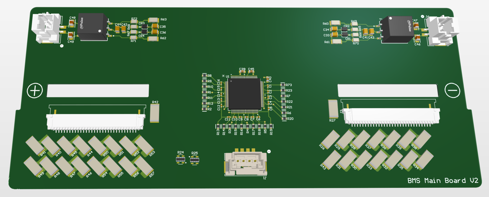
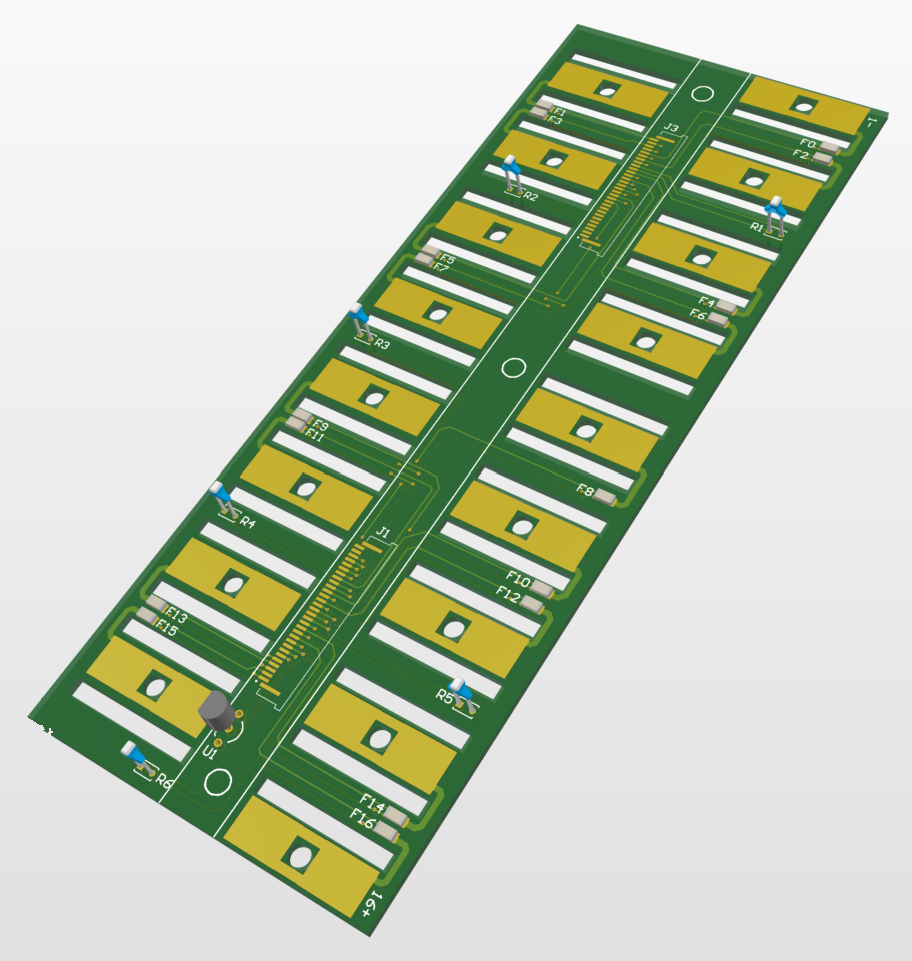

Segment BMS Rev 2
Each 16-cell segment of the tractive battery has a two-board BMS stack that measures cell voltages and temperatures. Rev 1 was designed by the team's lead electrical engineer. I designed Rev 2, focusing on routing and mechanical packaging, and cut the cell tap board from 6 layers to 2.
- Role
- Rev 2 designer
- Team
- Virginia Motorsports FSAE
- Tools
- Altium Designer
- Pack
- 556 V max, 6.8 kWh, 128S1P pouch cells
- Status
- Rev 2, in progress

The two-board stack
The pack is split into segments of 16 cells. Each segment has two boards:
- Cell tap daughterboard. The pouch cell tabs are clamped directly to this board. It holds the per-tap fuses and the thermistors.
- Main board. A 4-layer board built around the Analog Devices ADBMS6830 16-channel cell monitor. It communicates over isoSPI with the High Voltage Controller, which reads every segment in the pack.
Cell balancing is passive. Each cell discharges through a 20 Ω resistor, which gives a maximum balance current of about 218 mA at 4.35 V.
| Cells per segment | 16 in series |
|---|---|
| Segments in pack | 8 (128S1P, 556 V max, 6.8 kWh) |
| Cell monitor | Analog Devices ADBMS6830, 16 channels |
| Communication | isoSPI, two ports per board |
| Cell taps | 17, each fused on the cell tap board |
| Temperature sensing | Thermistors on the cell tap board |
| Balancing | Passive, 20 Ω per cell, 218 mA max |
| Main board | 4 layers |
| Cell tap board | 2 layers (6 in Rev 1) |
| Board-to-board connection | FPC between the two rigid boards, single-row connectors (stacking connector in Rev 1) |

What I changed in Rev 2
Rev 2 keeps the Rev 1 circuit architecture. My work was on routing and mechanical packaging.
The biggest change is how the two boards connect. Rev 1 used a stacking connector. Rev 2 connects the two rigid boards with an FPC and a single-row connector, which freed up a lot of room for routing. That let me cut the cell tap board from 6 layers to 2. The main board stayed at 4 layers. The FPC also holds up better to vibration and makes the stack easier to assemble.